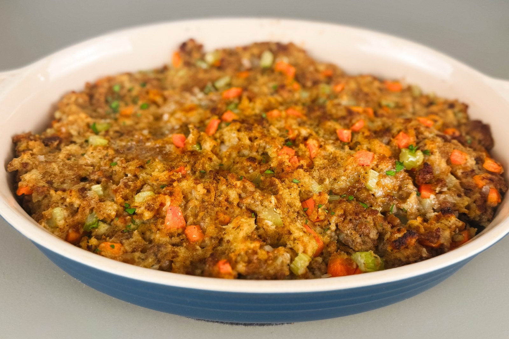

She’s the Goose

Thanksgiving · Family Recipes
A traditional Thanksgiving stuffing with breakfast sausage, seasoned bread, and tender vegetables. A family favorite that needs no reinvention.
Preheat oven to 350°F. Lightly butter a 9-by-13-inch or similar baking dish.
Cook breakfast sausage in a skillet over medium heat, breaking it into small pieces, until browned and cooked through.
Meanwhile, melt the butter in a large skillet. Cook the onion, carrots, and celery for 8–10 minutes, until tender.
Add the browned sausage to the vegetables.
Pour in 2 cups turkey broth, then gently fold in the seasoned stuffing until the bread is moistened. Add a little more broth only if needed; the stuffing should be moist, not soggy. Season with salt and pepper to taste.
Spoon into the prepared dish. Cover with foil and bake for 25 minutes. Uncover and bake 10–15 minutes more, checking until the top is as brown as you like and the center reaches 165°F.
Let rest for 5 minutes before serving.
Some recipes are special because they are familiar. This is Rob’s family stuffing—simple, comforting, and part of the Thanksgiving table year after year.
Another stuffing. For something different, there’s the brown butter, leek & caramelized shallot sourdough stuffing.
Letters from She’s the Goose
A letter and a recipe from me, every Tuesday.
Thank you — look for a note to confirm.